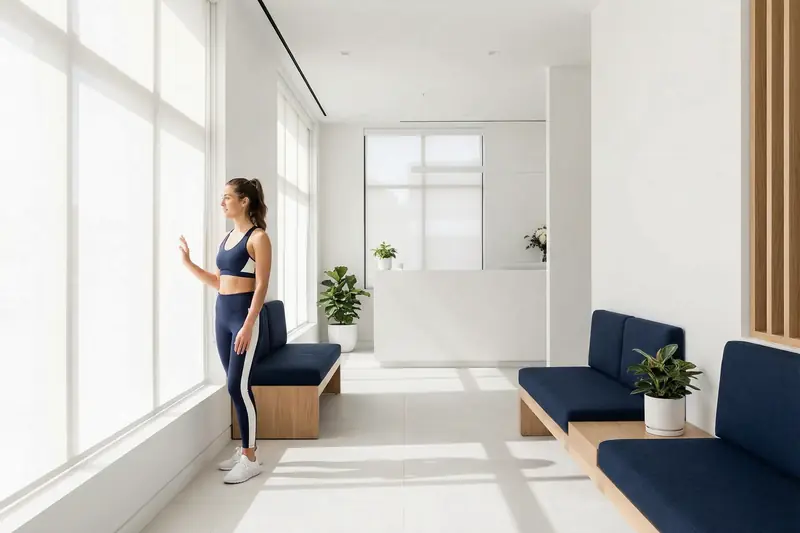

Lose weight, with a doctor's help.
For adults whose weight has become a medical question. A doctor looks at your history, your metabolic health and your medicines first, and prescribes only where it's clinically appropriate.
- First step
- A consultation, with pathology where needed
- Treatment
- Prescription only where appropriate
- Program
- Months, with regular monitoring
- Alongside
- Nutrition and lifestyle guidance
- Medicare
- Not bulk billed

What the assessment covers
- Your weight history, and what has and hasn't worked
- The medicines you take and any medical conditions
- Your metabolic health, with pathology where it would change the decision
- What you want, and what a realistic program looks like
Treatment
If it's clinically appropriate and you're eligible, a prescription medicine may be part of your plan, prescribed and monitored by the clinic's doctors. At the consultation the doctor goes through the options with you: what the evidence shows, the risks, and the cost.
This site doesn't name prescription medicines. Australian law doesn't allow them to be advertised to the public, and whether one suits you depends on your assessment.
How it works
- Questionnaire
Your history, medicines, height and weight, and what you're aiming for.
- Assessment
A doctor reads your answers, talks through your history with you, and orders pathology if it's needed.
- A plan
Prescription treatment only where appropriate, alongside advice on food and activity.
- Monitoring
Regular reviews to track progress, manage side effects and adjust the plan. Progress is read over months, not week to week.
Questions people ask first
General information only. Your doctor will answer for your situation.
Do I need a referral?
No. You can start with the questionnaire and a consultation.
Is it covered by Medicare?
Consultations aren't bulk billed. Some may attract a Medicare rebate, depending on their clinical nature, and the cost of any medicine depends on what's prescribed.
How long does a program last?
Months rather than weeks, with regular reviews. The doctor will tell you what to expect at the first consultation.
Start with the questionnaire. Include your height and weight; the doctor will take it from there.
Begin your assessment